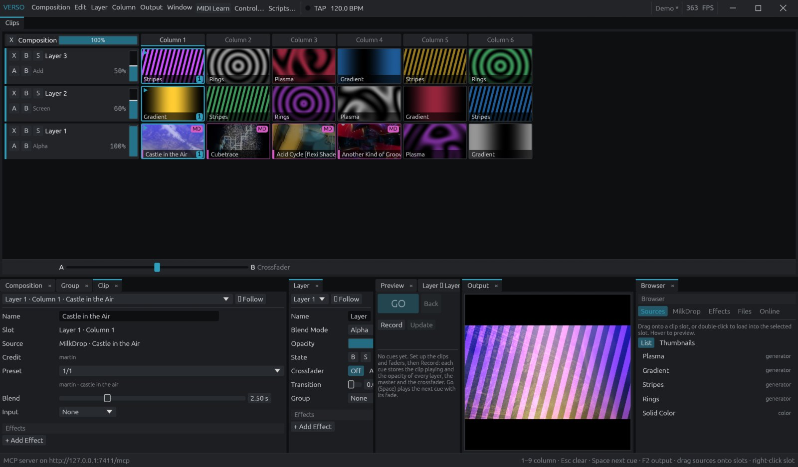

Utiliser Verso
Verso mixe de la vidéo en direct. Vous placez des clips dans une grille, chaque couche joue un clip à la fois, et les couches s'empilent sur la carte graphique pour former une seule image : la sortie. Ce guide va de l'installation au spectacle complet.
Installer
Téléchargez le paquet de votre système sur la dernière version.
Windows
- Décompressez
Verso-x.y.z-windows-x64.zipoù vous voulez (Bureau,C:\Outils, clé USB). - Lancez
verso.exe.
FFmpeg est fourni à côté de verso.exe. Laissez les dossiers effects, presets et scripts à côté de l'exécutable : Verso y charge ses effets et ses presets MilkDrop.
Windows SmartScreen peut signaler une application non reconnue, car elle n'est pas signée. Cliquez sur Informations complémentaires › Exécuter quand même.
macOS
- Ouvrez
Verso-x.y.z-macos-universal.dmget glissezVerso.appdans Applications. - La première fois, faites clic droit sur Verso.app › Ouvrir, puis confirmez. L'application n'est pas notarisée par Apple : un simple double-clic est refusé.
- Installez FFmpeg pour la vidéo :
brew install ffmpeg(avec Homebrew).
Si macOS dit encore que l'application est endommagée, lancez xattr -dr com.apple.quarantine /Applications/Verso.app dans le Terminal. Autorisez l'accès au micro quand il est demandé : les effets audio-réactifs et MilkDrop écoutent l'entrée audio.
Linux
Fedora et autres distributions RPM :
sudo dnf install ./verso-x.y.z-1.x86_64.rpm
sudo dnf install ffmpeg-free # ou ffmpeg depuis RPM Fusion pour tous les codecsUbuntu et Debian :
sudo apt install ./verso_x.y.z_amd64.debArchive portable, FFmpeg inclus :
tar xzf Verso-x.y.z-linux-x86_64.tar.gz
./Verso-x.y.z-linux-x86_64/versoVerso demande un pilote Vulkan (Mesa sur AMD et Intel, le pilote propriétaire sur NVIDIA) et fonctionne sous X11 et Wayland.
Depuis les sources
git clone https://github.com/elisalien/verso
cd verso
cargo run --release -p verso-appDemande Rust stable. Sous Linux, installez d'abord les paquets de développement ALSA, udev, xkbcommon, Wayland et X11.
L'interface

- Barre de menus : Composition, Edit, Layer, Column, Output, Window, puis MIDI Learn, Control…, Scripts… et TAP avec le tempo. Les images par seconde et le nom de la composition sont à droite.
- Clips : la grille. Une ligne par couche, une colonne par scène. La ligne Composition, en haut, porte le fader master.
- Crossfader : sous la grille, mixe les couches assignées au côté A ou B.
- Propriétés : les panneaux Composition, Group, Layer et Clip montrent les réglages et effets de la sélection.
- Moniteurs Preview, Cues et Output.
- Browser : onglets Sources, MilkDrop, Effects, Files et Online. On glisse depuis ici vers la grille.
- Barre d'état : le dernier message. Cliquez dessus pour l'historique des messages et erreurs.
Tous les panneaux s'ancrent : glissez un onglet vers un autre groupe ou vers un bord pour diviser, tirez les séparateurs pour redimensionner, clic droit sur un onglet › Undock pour l'ouvrir dans sa propre fenêtre. Le menu Window rouvre les panneaux, ajoute des panneaux Propriétés, réinitialise la disposition ou enregistre la vôtre par défaut. Window › Interface Colors… change le thème.
L'interface de Verso est en anglais ; les noms de menus et de boutons sont donnés tels qu'ils apparaissent.
Clips et colonnes
Un clip est une source placée dans une case de la grille. Chaque couche joue au plus un clip à la fois.
- Cliquez une case pour jouer son clip sur sa couche. Une case vide vide la couche. Recliquer le clip en cours le relance.
- Cliquez un en-tête de colonne, ou appuyez sur 1–9, pour lancer toute la colonne sur toutes les couches.
- Échap vide toutes les couches.
- Survolez un clip, un en-tête de couche ou de colonne : le moniteur Preview montre le clip, la couche seule ou ce que la colonne donnerait, sans toucher la sortie.
- Clic droit sur une case pour changer sa source ou la vider. Le petit nombre sur une case compte ses lancements (clic droit › Reset Counter).
Ajoutez ou supprimez couches et colonnes depuis les menus Layer et Column, ou clic droit sur un en-tête › Delete. Toute modification de structure s'annule avec Ctrl+Z.
Couches et mixage
Les couches s'empilent du bas (Layer 1) vers le haut. Chaque en-tête de couche porte :
| Contrôle | Touche | Effet |
|---|---|---|
| X | X | Éjecter : arrête le clip de la couche |
| B | B | Bypass : masque la couche sans l'arrêter |
| S | S | Solo : n'affiche que cette couche |
| A / B | A / B | Assigne la couche à un côté du crossfader |
| Fader | double-clic : remise à zéro | Opacité de la couche |
Le mode de fusion (Alpha, Add, Multiply, Screen, Lighten, Darken, Difference) se règle dans le panneau Layer. Add et Screen éclaircissent, Multiply assombrit, Difference inverse là où les couches se superposent. Le fader Composition est l'opacité master de toute la sortie.
Sources
Générateurs
Browser › Sources liste les générateurs intégrés (Plasma, Gradient, Stripes, Rings, Solid Color) et les shaders générateurs. Glissez-en un sur une case, ou sélectionnez une case et double-cliquez la source. Survolez une source pour la prévisualiser ; Thumbnails les affiche en grille d'images animées.
Vidéos et images
Déposez des images ou vidéos depuis l'explorateur de fichiers sur une case : elles remplissent cette case et les suivantes. Browser › Files › Open Folder… liste les médias d'un dossier à glisser. Tout codec lu par FFmpeg fonctionne : H.264, H.265, ProRes, HAP et Resolume DXV3 entre autres. Pour beaucoup de couches de vidéo HD, préférez HAP ou DXV : ils se décodent bien plus vite que le H.264. Le panneau Clip porte le transport (lecture, pause, position).
Shaders en ligne
Browser › Online cherche dans la bibliothèque ISF et sur ShaderToy et importe les shaders. Les générateurs vont dans Sources, les filtres dans Effects. ShaderToy demande votre clé API gratuite. Les shaders ShaderToy sont en général sous licence CC BY-NC-SA : utilisez le filtre d'usage commercial et vérifiez la page du shader avant une prestation payée.
MilkDrop
Verso joue les presets MilkDrop nativement, en réaction à l'entrée audio (à régler dans Control…). 147 familles de presets sont fournies, classées par catégorie dans Browser › MilkDrop. Les remix d'un même preset sont regroupés en une source : choisissez la variante dans le panneau Clip.
- Blend : changer le preset d'un clip, ou lancer un autre clip MilkDrop sur la même couche, fond comme MilkDrop : le nouveau preset reprend l'image laissée par le précédent.
- Input : injecte une autre couche dans le preset, comme texture et dans son feedback (Input Mix). Mettez l'opacité de cette couche à 0 pour ne l'utiliser que comme entrée.
- Vos propres presets : placez des fichiers Butterchurn
.jsondans le dossiermilkdropdu dossier utilisateur de Verso (voir Fichiers). Les fichiers.milkbruts ne sont pas encore pris en charge.
Un preset neuf démarre souvent noir et se remplit en une ou deux secondes. Sans entrée audio, beaucoup de presets restent sombres : vérifiez d'abord le périphérique audio.
Effets
Les effets traitent l'image à quatre niveaux : un clip (l'effet suit le clip), une couche (s'applique à tous ses clips), un groupe, ou la composition (la sortie finale).
- Glissez un effet depuis Browser › Effects sur un clip, un en-tête de couche ou l'en-tête Composition.
- Ou sélectionnez la cible et utilisez + Add Effect dans son panneau Propriétés.
- Les effets s'appliquent dans l'ordre, de haut en bas. Chaque paramètre peut être modulé (voir Contrôle).
Écrivez vos effets en WGSL (format Verso) ou en ISF (.fs). Verso les charge depuis le dossier effects à côté du programme, et depuis tout dossier choisi dans Browser › Effects › Load Folder…. Exemples : effects/wave.wgsl et effects/scanlines.fs.
Groupes et transitions
Ctrl/Maj-clic sur des en-têtes de couches voisines, puis Ctrl+G pour les grouper. Un groupe a sa propre opacité, son mode de fusion, son bypass et ses effets, appliqués à ses couches mixées ensemble. Les groupes s'imbriquent ; Ctrl+Maj+G dégroupe. Le bouton ▸/▾ replie un groupe ; ses boutons ▶ lancent une colonne dans ce groupe seulement.
La Transition d'une couche (panneau Layer) fond d'un clip au suivant sur la durée donnée au lieu de couper.
MIDI, OSC et audio
MIDI learn
- Appuyez sur L ou cliquez MIDI Learn.
- Cliquez un contrôle de l'interface (fader, case, bouton).
- Bougez ou appuyez sur le contrôle MIDI. Recommencez pour d'autres contrôles, puis quittez le mode learn.
Control… liste les entrées MIDI et les assignations, le port OSC, l'entrée audio et les modulateurs.
Modulation et tempo
Clic droit sur n'importe quel fader ou paramètre d'effet pour ajouter une modulation LFO ou audio (niveau d'une bande de fréquences). Les LFO sont calés sur le tempo : tapez-le avec T ou le bouton TAP.
OSC
Activez l'OSC dans Control… (port 7000 par défaut). Les valeurs vont de 0 à 1, les numéros commencent à 1.
| Adresse | Action |
|---|---|
/layer/2/opacity 0.5 | Opacité de la couche 2 |
/column/3/launch | Lance la colonne 3 |
/layer/1/effect/1/radius 0.8 | Paramètre d'effet |
/cue/go, /cue/previous, /cue/2/go | Liste de cues |
Verso répond aussi au schéma /composition/… des logiciels VJ à grille de clips courants : les layouts TouchOSC, modules Chataigne et modèles de contrôleurs prévus pour lui fonctionnent tels quels :
| Adresse | Action |
|---|---|
/composition/layers/N/clips/M/connect | Lance un clip |
/composition/columns/M/connect | Lance une colonne |
/composition/layers/N/clear | Éjecte une couche |
/composition/disconnectall | Vide toutes les couches |
/composition/layers/N/video/opacity | Opacité de couche |
/composition/master | Master |
/composition/crossfader/phase | Crossfader |
/composition/tempocontroller/tempo | Tempo en BPM |
Liste de cues
La liste de cues (Window › Cues) joue un spectacle écrit : théâtre, danse, set avec des moments fixes.
- Préparez un état : lancez des clips, placez les faders.
- Cliquez Record. La cue enregistre le clip joué et l'opacité de chaque couche, du master et du crossfader.
- Recommencez pour chaque moment. Update réécrit la cue sélectionnée.
- Pendant le spectacle, appuyez sur GO ou Espace : la cue suivante se joue avec son fondu (les clips se fondent, les niveaux glissent). Back revient à la précédente.
Chaque cue attend un Go ou s'enchaîne seule après quelques secondes ou temps. Bouger un fader à la main arrête le fondu en cours.
Sortie et mapping
Fenêtre de sortie
F2 ouvre la fenêtre de sortie. Placez-la sur le vidéoprojecteur ou le second écran et double-cliquez pour le plein écran.
Advanced Output
Output › Advanced Output… répartit la composition sur plusieurs écrans et surfaces :
- Écrans : un par moniteur (plein écran sur celui-ci) ou une source NDI.
- Slices : dans Input Selection, choisissez la partie de la composition prise par chaque slice ; dans Output Transformation, placez-la sur l'écran. Glissez slices, coins, points de polygone et points de grille de déformation.
- Masques : dessinez des polygones au clic, ou importez-les depuis un SVG.
- Le soft edge fond les zones de recouvrement entre projecteurs. Les mires de test, Identify et Highlight Selection aident au calage sur place.
- Importez et exportez les presets d'Advanced Output au format
.xmlde Resolume Arena, ou déposez-en un sur Verso.
NDI
Output › NDI® Output publie la sortie sur le réseau, pour OBS, un PC de streaming ou un autre serveur média. Il faut le runtime NDI (installé avec NDI Tools).
Scripts Lua
Scripts… ouvre l'éditeur. Un script définit frame(t) (à chaque image) et/ou beat(n) (à chaque temps), et pilote Verso avec les adresses OSC :
-- Pompe le master sur les basses, lance la colonne suivante à chaque mesure.
function frame(t)
verso.set("/master", 0.6 + 0.4 * t.audio.bass)
end
function beat(n)
if n % 4 == 0 then
verso.trigger("/column/" .. (n // 4 % verso.columns() + 1) .. "/launch")
end
endt porte le temps, le temps musical en temps (t.beats) et l'analyse audio (t.audio.bass…). Ctrl+Entrée applique. Les scripts sont enregistrés dans la composition et tournent isolés : pas d'accès aux fichiers ni au système, les boucles sans fin sont arrêtées. verso.get(adresse) lit une valeur. Cet exemple est fourni : scripts/beat-chase.lua.
Fichiers et sauvegarde
Ctrl+N / O / S créent, ouvrent et enregistrent les compositions .verso (Ctrl+Maj+S : enregistrer sous). Un * dans le titre signale des modifications non enregistrées ; Verso demande avant de les perdre. Une composition garde aussi la disposition de ses panneaux.
Une composition modifiée est copiée toutes les deux minutes dans nom.verso.bak à côté de son fichier (ou Untitled.verso.bak dans le dossier utilisateur). Enregistrer supprime la copie.
| Système | Dossier utilisateur |
|---|---|
| Windows | %APPDATA%\Verso |
| macOS | ~/Library/Application Support/Verso |
| Linux | ~/.config/verso |
Il contient la disposition, le journal (verso.log), les shaders importés (shaders/) et vos presets MilkDrop (milkdrop/).
Pilotage par agent (MCP)
Verso peut lancer un serveur Model Context Protocol pour qu'un agent IA comme Claude Code lise la composition, la pilote et récupère des images rendues. Il est désactivé sauf demande au lancement, n'écoute que sur 127.0.0.1 et refuse les actions destructives sans confirmation.
verso --mcp 7400
claude mcp add --transport http verso http://127.0.0.1:7400/mcpRaccourcis
| Touche | Action |
|---|---|
| 1–9 | Lancer une colonne |
| Échap | Vider toutes les couches |
| Espace | Go : cue suivante |
| X B S | Éjecter, bypass, solo de la couche |
| A B | Côté du crossfader de la couche |
| L | MIDI learn |
| T | Tap tempo |
| F2 | Fenêtre de sortie |
| Ctrl+G / Ctrl+Maj+G | Grouper / dégrouper des couches |
| Ctrl+Z / Ctrl+Maj+Z | Annuler / rétablir |
| Ctrl+N O S | Nouveau, ouvrir, enregistrer |
Sur macOS, Ctrl correspond à Cmd.
Dépannage
Les vidéos ne se lisent pas
La barre d'état indique « FFmpeg not found ». Installez FFmpeg (voir Installer) ou réglez les variables VERSO_FFMPEG et VERSO_FFPROBE sur les deux programmes.
Pas d'effets ni de presets MilkDrop
Les dossiers effects et presets doivent être à côté de l'exécutable. Ne sortez pas verso.exe de son dossier : créez plutôt un raccourci.
MilkDrop reste noir
Choisissez la bonne entrée audio dans Control… et jouez du son.
La fenêtre ne s'ouvre pas, ou l'image est noire
Mettez à jour le pilote graphique. Sous Linux, installez le pilote Vulkan (mesa-vulkan-drivers sur Fedora). Le journal du dossier utilisateur (verso.log) indique la carte graphique choisie et la cause de l'échec.
Signaler un bug
Ouvrez une issue sur GitHub avec votre système, votre carte graphique, ce que vous faisiez, et verso.log (Window › Messages donne son chemin).